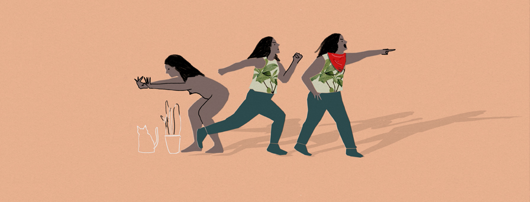
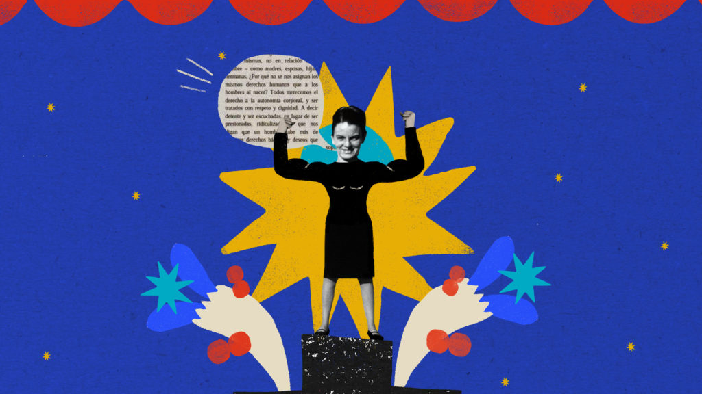
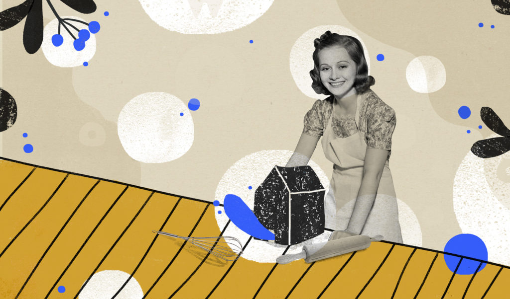
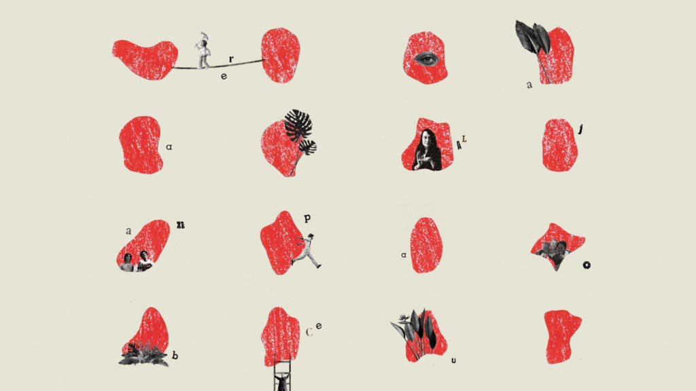

Leer la Ciudad es un club de lectura en línea sobre temas de arquitectura y ciudad.
Acerca
Libros y reseñas
Noticias
Libros y Reseñas
Avisa cuando llegues

Armada de Palabras

Mujeres, casas y ciudades

Lina Bo Bardi por escrito
